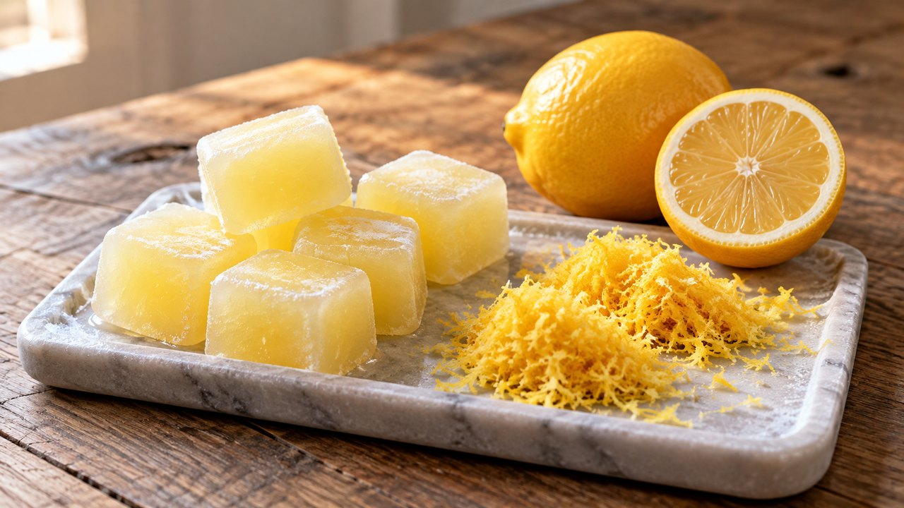

Frozen Citrus Zest and Juice
Bright · Freezing · About 20 min active prep; total estimate 4 hr 20 min including freezing. Follow the doneness endpoint rather than the clock.
Yield: Variable zest and juice; measure each portion

Ingredients
- 4 Meyer lemons or 6 satsumas/mandarins, sound and ripe
Directions
- Wash fruit before cutting. Dry well. Finely zest only the colored outer peel, avoiding bitter white pith.
- Portion zest by teaspoon on a lined freezer tray, freeze firm, then seal in a labeled small freezer bag. This zest-pack method is an original convenience variation.
- Juice the fruit and strain out seeds. Avoid crushing the peel into the juice, which can release bitter oils.
- Immediately pack juice in freezer-safe glass containers, leaving expansion room according to the container maker. For small portions, freeze measured tablespoons in clean ice-cube wells and transfer solid cubes to a freezer bag.
- Label the fruit and amount per portion. Thaw in the refrigerator for dressings or add frozen juice to cooking.
Notes & serving ideas
Unsweetened juice; no canning. Yield varies with fruit size and ripeness. Use only glass specifically rated for freezing, never narrow-neck bottles filled to the top. This is not a validated substitution for bottled lemon juice in canning.
No primary-crop weight estimate is provided; measure actual ingredients and finished portions.
Use in Harvest Helper I made this → Add to pantry
Review & safe storage
Original recipe: Family Recipes culinary preparation informed by the references below; the exact formula and storage life have not been laboratory validated or kitchen-tested here. References do not validate it for canning.
Keep frozen at 0°F (−18°C) or below. Thaw in the refrigerator at 40°F (4°C) or below, or use directly in cooking as directed. Use thawed portions within 3 days as a conservative household practice. This recipe is not shelf-stable.
Work with clean hands, sound produce and clean equipment. Refrigerate prepared perishables promptly, within 2 hours (1 hour above 90°F / 32°C); cool hot mixtures in shallow small containers. Never thaw perishables on the counter.